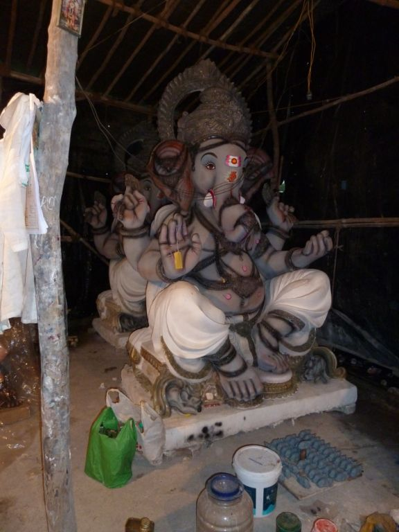
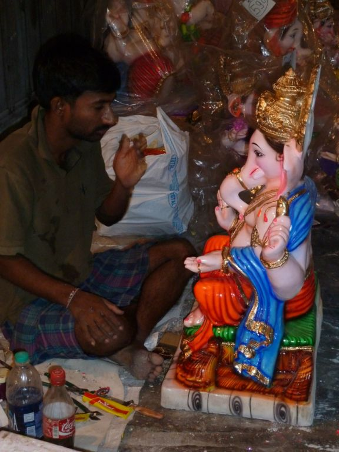
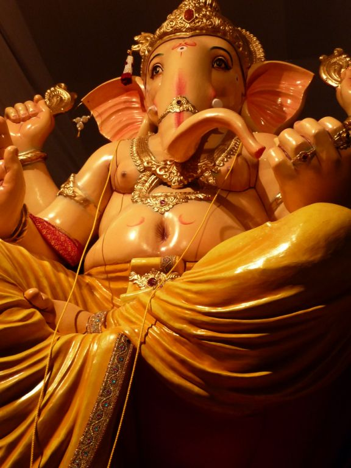
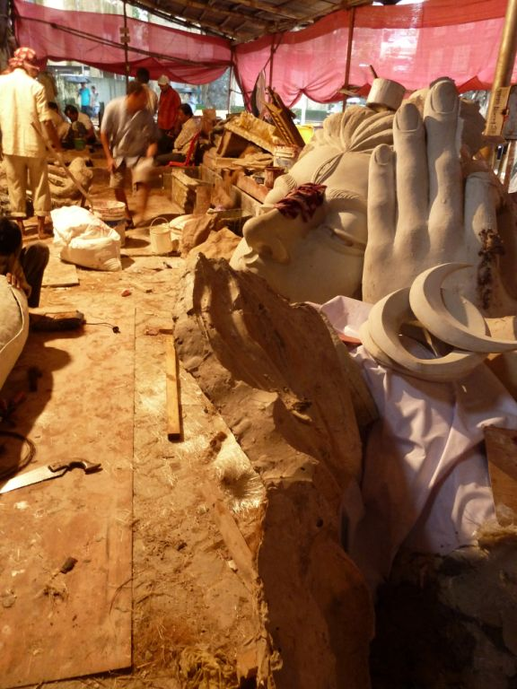
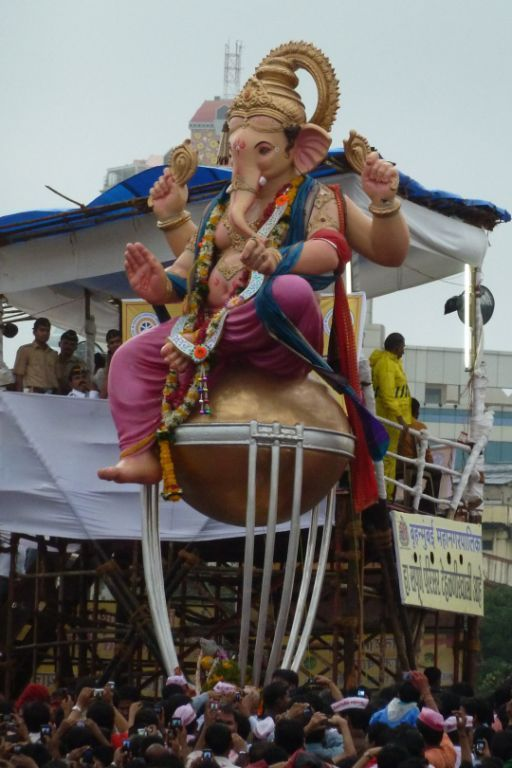
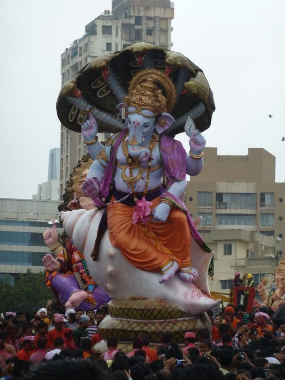
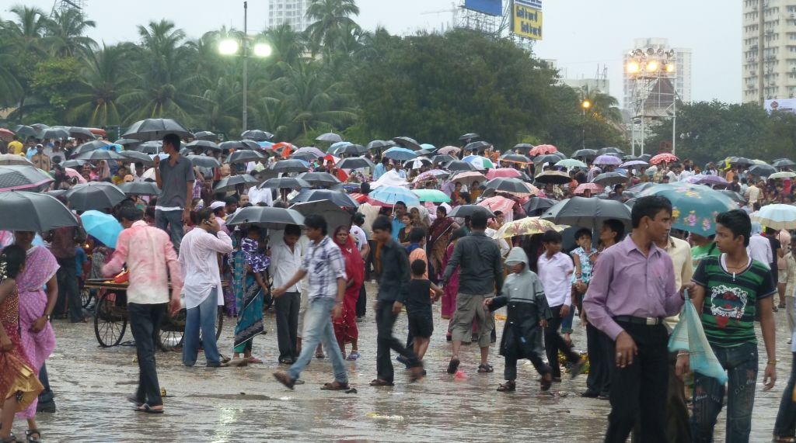

Ganpati Bappa Morya!
Bombay Chowpatties, India
By far the festival we enjoyed the most last year was Ganpati Chaturthi - a 10 day celebration of Lord Ganeshs' birthday. It is also the most important festival of the year here in Mumbai because Ganesh is every Mumbaikers favourite God. Before embarking upon any sort of venture or trip devotees (and not just Hindus I must add!) will say prayers and give offerings to Ganesh and in return he will offer his blessings.
Our festival celebrations started a week early this year with a visit to the workshops around Lalbaug to see the finishing touches being put to the Ganesh idols. Idol makers from all over the country come to the lanes of Lalbaug around June every year to start putting together the temporary temples (or 'mandals') that house the idols and to fulfill the orders for tens of thousands of Ganeshs for temples and peoples' homes. Its quite amazing to see the work that goes into these idols which are destined, after a set number of days, to be immersed in the sea!
We went down to Juhu Beach on the first day of the immersions (day one and half of the festival.... don't ask!) which is traditionally the day when the smaller idols from family homes are taken to be immersed. It was quite different from last year as it is still the monsoon season and so the chants of 'Ganpati Bappa Morya' were often drowned out by heavy torrents of rain. Still, it didn't dampen anyones' spirits and we enjoyed the 'prasad' (holy food) that was shared out and took the 'snaps' that everyone seemed to be requesting!
Then came the final day and although everyone seemed surprised that we were going, we headed down to the city Chowpatty with our friends Karen and Catie to see the biggest temple idols being immersed. It was all slightly chaotic and I did at times question the wisdom of coming as I watched the odd 15ft Ganesh idol hurtling down the beach at full throttle towards me. But it was fun ....
Ganpati bappa Morya! Agle baras to jaldi aao.' ('Father Ganpati, Come again soon next year')
Our festival celebrations started a week early this year with a visit to the workshops around Lalbaug to see the finishing touches being put to the Ganesh idols. Idol makers from all over the country come to the lanes of Lalbaug around June every year to start putting together the temporary temples (or 'mandals') that house the idols and to fulfill the orders for tens of thousands of Ganeshs for temples and peoples' homes. Its quite amazing to see the work that goes into these idols which are destined, after a set number of days, to be immersed in the sea!
We went down to Juhu Beach on the first day of the immersions (day one and half of the festival.... don't ask!) which is traditionally the day when the smaller idols from family homes are taken to be immersed. It was quite different from last year as it is still the monsoon season and so the chants of 'Ganpati Bappa Morya' were often drowned out by heavy torrents of rain. Still, it didn't dampen anyones' spirits and we enjoyed the 'prasad' (holy food) that was shared out and took the 'snaps' that everyone seemed to be requesting!
Then came the final day and although everyone seemed surprised that we were going, we headed down to the city Chowpatty with our friends Karen and Catie to see the biggest temple idols being immersed. It was all slightly chaotic and I did at times question the wisdom of coming as I watched the odd 15ft Ganesh idol hurtling down the beach at full throttle towards me. But it was fun ....
Ganpati bappa Morya! Agle baras to jaldi aao.' ('Father Ganpati, Come again soon next year')

A Ganesh waiting to be painted

Ganeshs' consort - a mouse

Not painted yet, but sold already!

An idol painter

One of the most famous Ganeshs' - at Ganesh Galli - a day before its unveiling.

Backstage at Ganesh Galli

Backstage at the Ganesh Galli temporary mandal. Can you believe this will be knocked down after 10 days?!

1st Immersion Day, Juhu Chowpatty. It rained so hard, but there were still plenty of ready smiles!

1st Immersion Day, Juhu Chowpatty

Not so crowded as last year

Washed up Ganeshs\

Ganesh on the way to immersion, complete with rave music!

Our first sight of Chowpatty on the last immersion day

Indians couldn't let the world cup victory pass them by

View from the beach

A young devotee

The police watch whilst Ganesh waves at the crowds

My favourite Ganesh of the day

We shared the beach with a few hundred thousand that day

Sadly the rain didn't hold off, but it didn't seem to dampen anyone's spirits

They just kept coming...

Ganpati Bappa Morya! Come back soon!